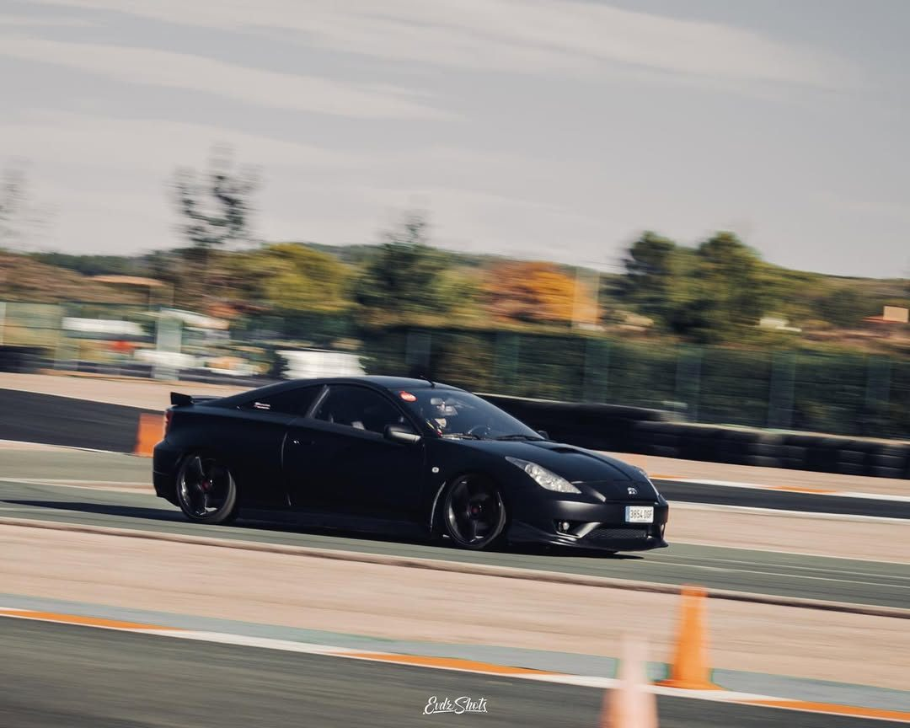
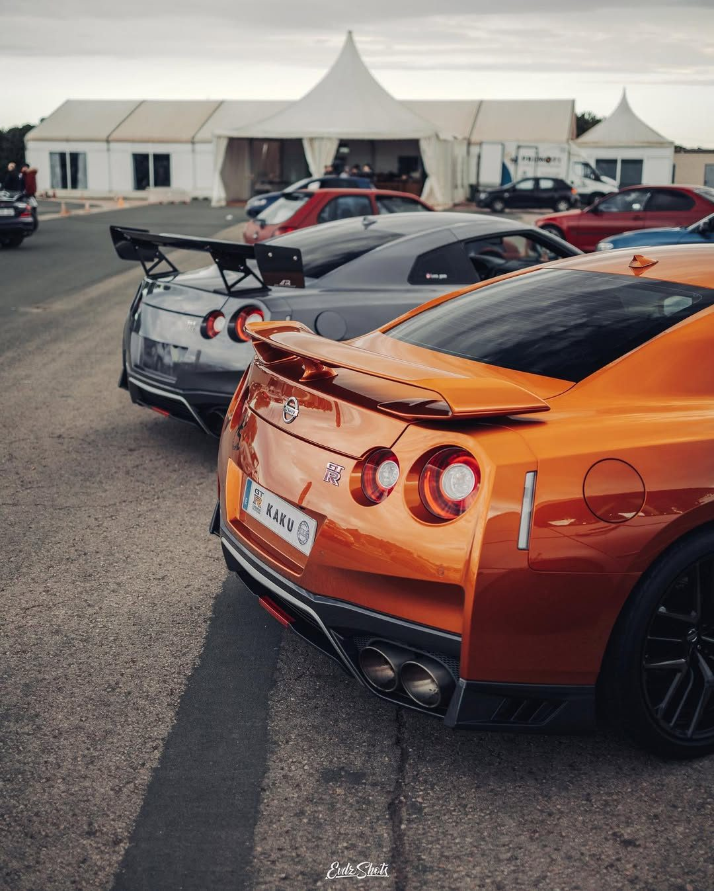
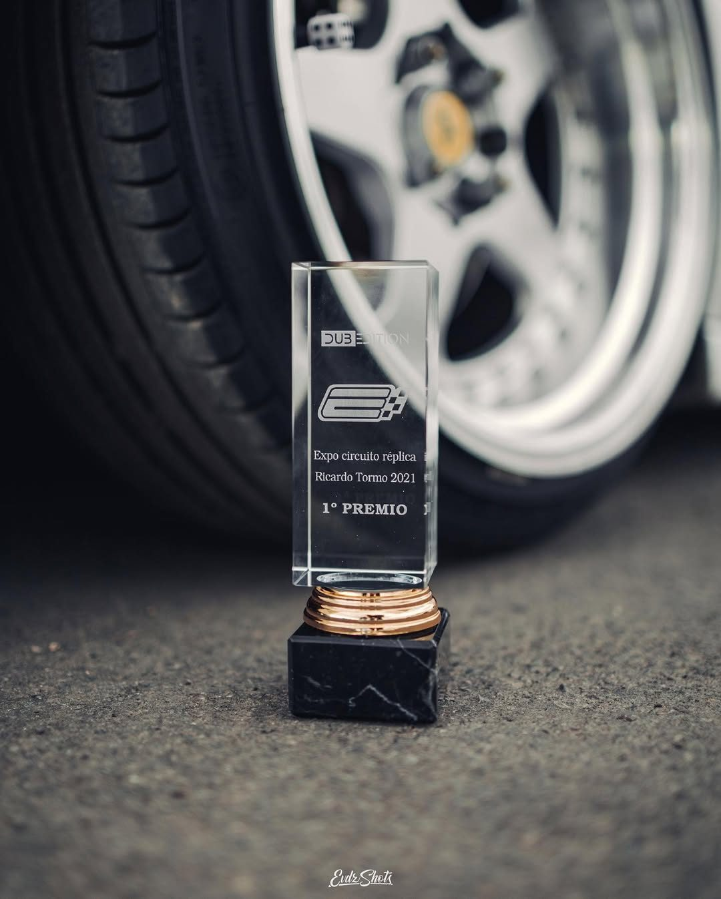
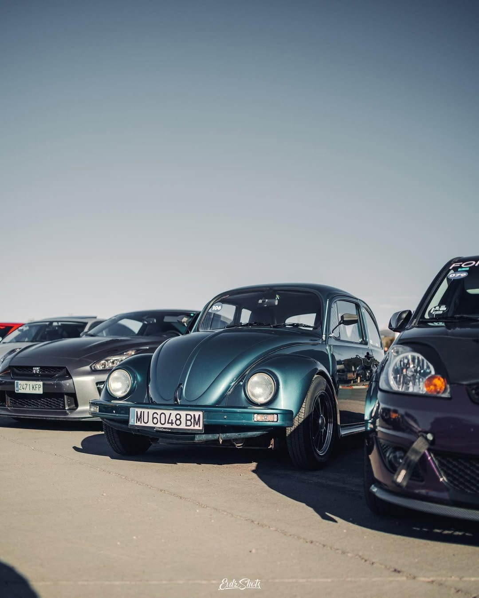
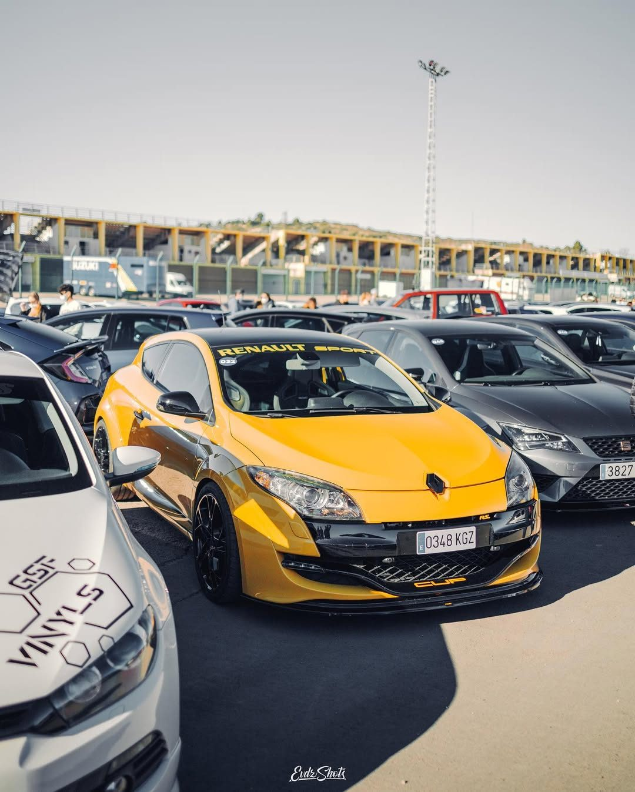
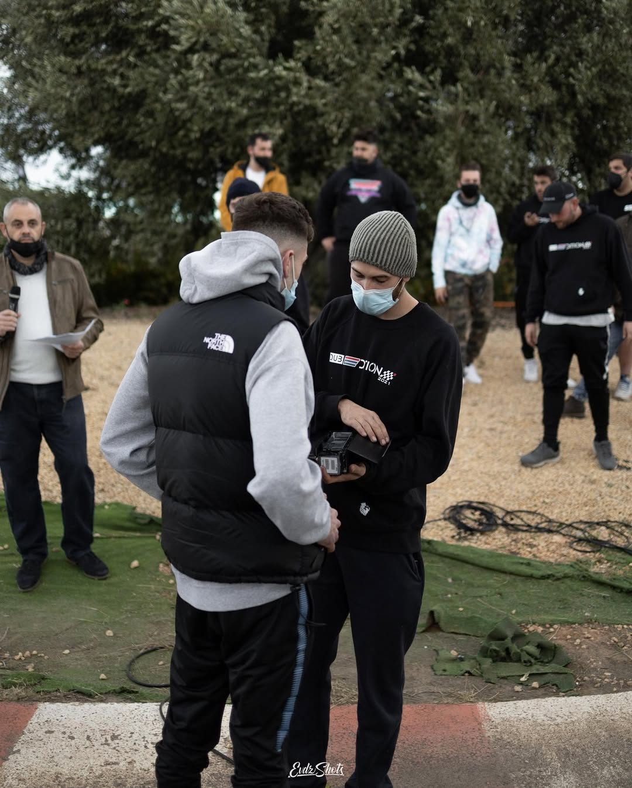

DUB21 · Circuit Ricardo Tormo
El primer gran hito de Dub Edition.
Un evento junto a Probike Racing que marcó un antes y un después para el club.
Nuestra historia
DUB21 fue mucho más que una quedada.
El evento DUB21 en el Circuit Ricardo Tormo de Valencia fue espectacular y supuso un momento clave para Dub Edition. Fue nuestro primer evento y, por ahora, el único de este nivel; por eso lo recordamos como un hito dentro de la historia del club.
Junto a Probike Racing conseguimos crear un ambiente donde se juntaron coches espectaculares, exposición, drag races, música y una comunidad con muchísimas ganas. Fue de esos días en los que entiendes que Dub Edition podía convertirse en algo más grande.
DUB21 forma parte de nuestra visión: crear eventos de coches en Valencia con exposición, cultura automotive, comunidad y una imagen seria para marcas y aficionados.
Drag races
Una de las partes más intensas del evento, con adrenalina y espectáculo dentro del circuito.
Expo de coches
Proyectos cuidados, estilos diferentes y coches que hicieron que el evento tuviera identidad propia.
Música y ambiente
El punto que convirtió el evento en experiencia: gente, energía y cultura automotive.
Probike Racing
Una colaboración clave para hacer realidad un evento especial en el Ricardo Tormo.
DUB21 en imágenes
Expo, circuito, detalles y ambiente.






“Que nuestro primer gran evento fuese en el Circuit Ricardo Tormo no fue casualidad: fue una declaración de intenciones.”
Lo próximo
DUB21 fue el primero. Lo siguiente tiene que estar a la altura.
Para enterarte de futuros eventos, rutas y movimientos del club, entra al canal o síguenos en Instagram.
IR A COMUNIDAD